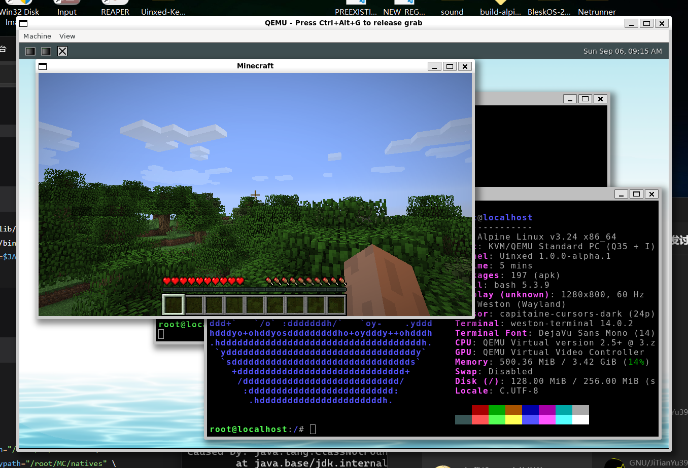

抢先体验 上一代
SpaceOS 8
内核是 C 写的 UNIX-like 内核 Uinxed-Kernel，用户态是一套自研的桌面和系统程序，包括窗口合成器、浏览器和文件管理器。第二版 slim 镜像修好了 xHCI 上的 USB HID，USB 键盘和鼠标现在可以用；第一版里它们插上没有反应。
- 内核版本
- Uinxed 1.0.0-alpha.1
- 架构
- x86_64
- 内核仓库许可
- Apache-2.0

- 自研用户态
桌面、合成器、浏览器和系统程序，约 29.2 万行。
- X11 兼容层
120 个核心协议请求，能运行 DOOM 这类图形程序。
- Uinxed 内核
C 写的 UNIX-like 内核，实现 Linux 6.12 系统调用 ABI。
- 实体机验证
已在 Dell PowerEdge R410 等实体服务器上启动。
抢先体验版，不是正式 release
内核已在实体服务器上启动，桌面能运行，也能跑 OpenJDK 和 DOOM 这类现成的 Linux 软件。图形和部分 ABI 还在补，所以只叫抢先体验。
系统结构
从上到下是各层的职责；虚线是用户态和内核之间的系统调用接口。
- SPUI 桌面与应用compositor · browser · terminal · filemgr · settings 等
- X11 兼容层 · VortexGlassLinux 图形软件与窗口主题
- libc · libgfx · imgui自研的 C 库、图形库和 GUI 工具包
- Linux 6.12 系统调用 ABI编号 0–462
- Uinxed-KernelEEVDF 调度 · 内存 · VFS · 网络 · 驱动
- Limine 引导UEFI 与 Legacy 双模
规模
| 部分 | 规模 | 说明 |
|---|---|---|
| 用户态 | 约 29.2 万行 | SPUI 桌面、合成器、浏览器和系统程序，全部自研。 |
| 内核 | 约 18.1 万行 | C 写的 UNIX-like 单体内核，449 个 C/H 文件。 |
| 图形界面 | 约 3.4 万行 | 合成器和自研图形库 libgfx。 |
| 浏览器 | 约 2.4 万行 | 纯 C 的 UxHtml 引擎，带 JavaScript 引擎。 |
| 系统调用 | 编号 0–462 | Linux 6.12 x86-64 的系统调用编号。 |
| 版本 / 许可 | 1.0.0-alpha.1 | 内核仓库的许可是 Apache-2.0。 |
现成软件的运行情况
下面这些程序都不是为这个内核写的。
| 程序 | 状态 | 备注 |
|---|---|---|
| OpenJDK | 能运行 | 为它重写了信号处理、TSS / SMP / APIC 和中断路径，并修了 VFS 与页管理。JVM 的 GC 线程、线程挂起和内存映射都依赖这些地方行为正确。 |
| DOOM | 能运行 | 经自研的 X11 兼容层运行。需要键盘、鼠标、连续动画帧、音频和稳定的显示通路。 |
| systemd | 初步跑通 | systemd 一启动就探测大量可选的 sysctl、挂载点和命名空间接口，任何一处行为不符都会起不来。为此补了 Cgroup v2 和完整的 Linux 命名空间支持。 |
| Minecraft | 团队实测 | 需要内核扛住真实 JVM 的内存管理、GC 线程调度、mmap 和 futex 行为。运行环境见页首截图。 |
X11 兼容层与窗口主题
- X11 兼容层
从零写的 X11 服务器，实现了 120 个核心协议请求，约 4500 行。目的是让原生 SPUI 桌面直接运行 Linux 上的图形软件：窗口映射、绘制、输入与事件、字体、光标、属性与选区，缺任何一个都会让部分程序起不来。
- VortexGlass
Vista Aero 风格的毛玻璃窗口装饰，在自研合成器里逐像素绘制。34 个素材覆盖四边边框、标题栏按钮的四种状态和 Aero orb。主题可以在
tech/win98/vortexglass之间切换，由配置服务统一管理，所有应用共用一套外观。
用户态与桌面
用户态没有套现成的发行版：从窗口合成器到浏览器都是自己写的。
- SPUI 桌面
约 4500 行，14 个文件。有 dock、壁纸和窗口管理；dock 上可以启动终端、开始屏幕、文件管理器、活动监视器和文本编辑器。图标缺失时有降级配色。
- 服务与配置
init / service / uxconfd。自研的 PID 1 服务管理器，有目标里程碑、进程监管与自动重启、僵尸回收。状态输出对齐 systemd 的
[ OK ] Started …格式，提供 systemctl 风格的命令行，经/tmp/initctl与 PID 1 通信。配置由uxconfd统一管理，用uxconf-query读写。 - 首次开机向导
约 2100 行。思路和 PySpOS 里的向导相同：语言、时区等设置会实际生效。
- libc 与工具链
libc / libgfx / imgui：自己的 C 库、图形库和 GUI 工具包，另有自研的
sh。
应用
全部自研，不是移植来的。行数是源码规模。
| 程序 | 作用 | 行数 |
|---|---|---|
| compositor | 窗口合成器：DRM/KMS、损伤跟踪、Xcursor、窗口装饰 | 12,320 |
| browser | 浏览器，含 UxHtml 渲染引擎与 JS 引擎 | 25,713 |
| libgfx | 自研图形库与控件库 | 21,785 |
| settings | 系统设置 | 3,064 |
| terminal | 终端仿真器 | 2,869 |
| oobe | 首次开机向导 | 2,137 |
| editor | 文本编辑器 | 1,637 |
| displaymgr | 显示管理器 | 1,489 |
| filemgr | 文件管理器 | 1,347 |
| sysmon | 活动监视器 | 1,267 |
| init | PID 1 服务管理器 | 1,262 |
| uxconfd | 配置守护进程 | 873 |
| netmgrd | 网络管理器 | 761 |
| escalate | 提权通道 | 685 |
| calc | 计算器 | 388 |
Uinxed-Kernel
桌面、应用和浏览器都跑在这个内核上：C 从零写的 UNIX-like x86_64 单体内核，经 Limine 引导（UEFI 与 Legacy 双模），实现 Linux 6.12 的系统调用 ABI。
| 调度与进程 | EEVDF 调度器，每 CPU 运行队列配红黑树时间线（vruntime / deadline / vlag / weight）；SMP 任务迁移与负载均衡、IPI 抢占；两阶段等待队列避免丢失唤醒；互斥量与 futex 的优先级继承；cgroups、ptrace、可加载内核模块。 |
|---|---|
| 内存管理 | 二元 buddy 物理页分配器，四级页表（4 KiB / 2 MiB / 1 GiB）；高半区直接映射（HHDM）和 slab 分配器；统一页缓存，带 LRU 回收、脏页回写和预读；swap 子系统。 |
| 文件系统 | UNIX 风格的 VFS，有挂载点和 inode 节点；tmpfs 作默认根，另有 procfs、sysfs、devtmpfs、cpio、cgroupfs；实际文件系统覆盖 FAT12/16/32、exFAT、ext2/3/4、NTFS（可写）和 ISO 9660。 |
| 网络 | 自研协议栈：Ethernet、ARP、IPv4/IPv6、ICMP/ICMPv6、NDP、UDP、TCP；e1000/e1000e 与 RTL8139/8169 网卡驱动；Linux 套接字 ABI、DHCP 客户端，以及 /proc/net 和 /sys/class/net 视图。 |
| 驱动 | 输入：PS/2 键鼠、evdev、USB HID。存储：IDE/ATA、AHCI、NVMe、USB Mass Storage。显示：DRM/KMS、VirtIO-GPU、GOP 帧缓冲。音频：SB16、Intel HD Audio。总线与平台：PCI/PCIe、USB、I2C、ACPI、HPET、TPM 1.2/2.0。 |
| 安全与 IPC | seccomp 过滤和 no_new_privs；AF_UNIX / AF_NETLINK / AF_INET / AF_INET6；pipe、epoll、eventfd、timerfd、signalfd、memfd、pidfd、POSIX 消息队列和 System V IPC；futex2；inotify；Unix98 PTY 和多虚拟终端。 |
当前状态
实验性系统，不要用重要数据冒险
内核版本串是 Uinxed 1.0.0-alpha.1。请用可抛弃的机器和测试盘。
已经跑通
- 内核在实体服务器上启动，已验证 Dell PowerEdge R410 等机器。
- 能引导 Alpine Linux 并拉起图形桌面。Weston（Wayland）和 Xfce 两条路径都验证过，终端可用。
- SPUI 桌面和自研用户态在同一个内核上运行。
- X11 兼容层能运行 DOOM 这类图形程序，OpenJDK 能运行。
第二版的更新
修复 xHCI 控制器上的 USB HID，USB 键盘和鼠标可以使用。第一版镜像继续保留，详情和校验值见下载页的版本记录。
还在做
- GPU 驱动、虚拟化设备、音频，以及相当一部分 Linux ABI。
- PS/2 输入路径、evdev 消费者、poll/epoll 唤醒和 EEVDF 调度器还在验证阶段。
- systemd 只是初步跑通，离可用还有距离。
- NTFS 写入驱动还不能信任。
构建与运行
需要 make、gcc（建议 13.3+）、qemu、xorriso；menuconfig 另需 kconfig-frontends 和 libncurses-dev。
在 QEMU 里运行
不需要额外硬件，最快能看到桌面。make run 已经把串口输出接到终端。要抓内核日志，把 limine.conf 里的 console=tty0 改成 console=ttyS0：启动挂死时屏幕控制台可能丢日志，串口更可靠。
在实体机上运行
已在 Dell PowerEdge R410 上验证。先看仓库 README 的 Run on physical hardware 一节，按步骤准备引导介质。请用可抛弃的机器和测试盘；文件系统驱动（尤其是 NTFS 写入）目前不适合放重要数据。